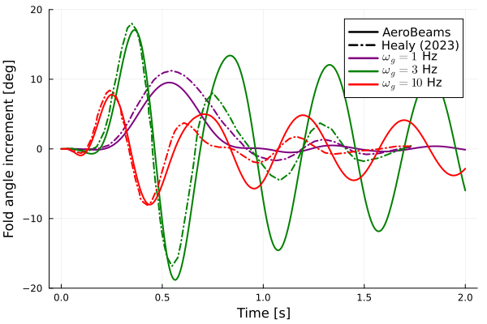
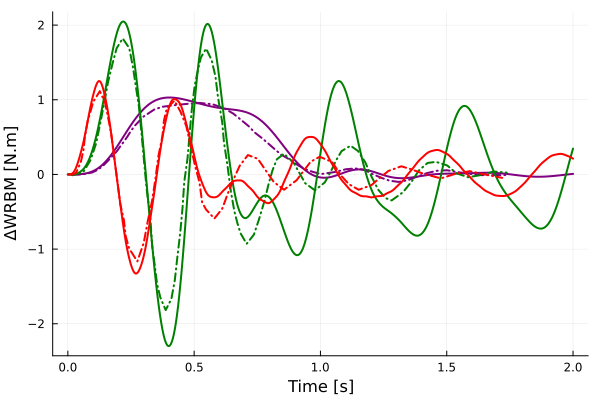

Gust response of a wing with flared folding wingtip (FFWT)
This example illustrates how to set up a dynamic gust response analysis for a wing featuring a flared folding wingtip (FFWT). The influence of a one-minus-cosine gust frequency on the behavior of this wing model was studied numerically by Healy's PhD Thesis.

Top view of baseline wing model featuring a FFWT by Healy et al.
The code for this example is available here.
Problem setup
Let's begin by setting the variables of our problem. In this example we will analyze the response of the coasting (fold) angle and wing root bending moment (WRBM) to a series of one-minus-cosine gusts with different frequencies (meaning different durations). The hinge is assumed as a universal joint (allowing movement about the three axes), but the restriction of the in-plane bending DOF is modeled through a stiff spring with value kIPBendingHinge.
using AeroBeams, DelimitedFiles
# Gust frequency range [Hz]
ωRange = [1,3,10]
# Gust maximum vertical velocity [m/s]
Ug = 0.5
# Hinge configuration
hingeConfiguration = "free"
# Fold angle [rad]
foldAngle = nothing
# Flare angle [rad]
Λ = 15*π/180
# Root pitch angle [rad]
θ = 7.5*π/180
# Airspeed [m/s]
U = 18
# Stiffness of the spring around the hinge for in-plane bending
kIPBendingHinge = 1e4
# Gravity
g = 9.80665
# Discretization
nElementsInner = 16
nElementsFFWT = 4
nElem = nElementsInner + nElementsFFWT
# Tip loss options
withTipCorrection = true
tipLossDecayFactor = 12
# Solution method for hinge constraint
solutionMethod = "addedResidual"
# Time variables
Δt = 1e-3
tf = 2
# System solver
σ0 = 1
maxIter = 200
relTol = 1e-7
NR = create_NewtonRaphson(displayStatus=false,initialLoadFactor=σ0,maximumIterations=maxIter,relativeTolerance=relTol)
# Initialize outputs
t = Array{Vector{Float64}}(undef,length(ωRange))
M2root = Array{Vector{Float64}}(undef,length(ωRange))
ϕ = Array{Vector{Float64}}(undef,length(ωRange))
problem = Array{DynamicProblem}(undef,length(ωRange))Solving the problem
In the following loop, we create new gust and model instances for each gust frequency, create and solve the dynamic problem, and then extract the coasting angle of the FFWT (ϕ) and the out-of-plane bending moment at the root (M2root). The model creation process is streamlined with the function create_HealyBaselineFFWT, taking the appropriate inputs. For nonzero pitch angles, the algorithm fails to converge at low airspeed values.
# Loop gust frequency range
for (i,ω) in enumerate(ωRange)
# Display progress
# Gust
gust = create_OneMinusCosineGust(initialTime=0,duration=1/ω,verticalVelocity=Ug)
# Model
model = create_HealyBaselineFFWT(solutionMethod=solutionMethod,hingeConfiguration=hingeConfiguration,foldAngle=foldAngle,flareAngle=Λ,kIPBendingHinge=kIPBendingHinge,airspeed=U,pitchAngle=θ,withTipCorrection=withTipCorrection,tipLossDecayFactor=tipLossDecayFactor,nElementsInner=nElementsInner,nElementsFFWT=nElementsFFWT,g=g,gust=gust)
# Solve steady problem for initial conditions
steadyProblem = create_SteadyProblem(model=model,systemSolver=NR)
solve!(steadyProblem)
# Create and solve dynamic problem
problem[i] = create_DynamicProblem(model=model,finalTime=tf,Δt=Δt,systemSolver=NR,skipInitialStatesUpdate=true,x0=steadyProblem.x)
solve!(problem[i])
# Unpack numerical solution
t[i] = problem[i].savedTimeVector
M2root[i] = [problem[i].nodalStatesOverTime[j][1].M_n1[2] for j in 1:length(t[i])]
ϕ[i] = [problem[i].hingeAxisConstraintsDataOverTime[j][1].ϕ*180/π for j in 1:length(t[i])]
endPost-processing
First, we choose which of Healy's reference model we will use. Then, we load the corresponding data.
# Select reference data (choose between "baseline" or "ASMVLM")
refModel = "baseline"
# Load reference data
if refModel == "baseline"
ΔWRBM_Healy_1Hz = readdlm(pkgdir(AeroBeams)*"/test/referenceData/HealyBaselineFFWTOMCGustFloating/DWRBM_baseline_1Hz.txt")
ΔWRBM_Healy_3Hz = readdlm(pkgdir(AeroBeams)*"/test/referenceData/HealyBaselineFFWTOMCGustFloating/DWRBM_baseline_3Hz.txt")
ΔWRBM_Healy_10Hz = readdlm(pkgdir(AeroBeams)*"/test/referenceData/HealyBaselineFFWTOMCGustFloating/DWRBM_baseline_10Hz.txt")
fold_Healy_1Hz = readdlm(pkgdir(AeroBeams)*"/test/referenceData/HealyBaselineFFWTOMCGustFloating/fold_baseline_1Hz.txt")
fold_Healy_3Hz = readdlm(pkgdir(AeroBeams)*"/test/referenceData/HealyBaselineFFWTOMCGustFloating/fold_baseline_3Hz.txt")
fold_Healy_10Hz = readdlm(pkgdir(AeroBeams)*"/test/referenceData/HealyBaselineFFWTOMCGustFloating/fold_baseline_10Hz.txt")
elseif refModel == "ASMVLM"
ΔWRBM_Healy_1Hz = readdlm(pkgdir(AeroBeams)*"/test/referenceData/HealyBaselineFFWTOMCGustFloating/DWRBM_ASMVLM_1Hz.txt")
ΔWRBM_Healy_3Hz = readdlm(pkgdir(AeroBeams)*"/test/referenceData/HealyBaselineFFWTOMCGustFloating/DWRBM_ASMVLM_3Hz.txt")
ΔWRBM_Healy_10Hz = readdlm(pkgdir(AeroBeams)*"/test/referenceData/HealyBaselineFFWTOMCGustFloating/DWRBM_ASMVLM_10Hz.txt")
fold_Healy_1Hz = readdlm(pkgdir(AeroBeams)*"/test/referenceData/HealyBaselineFFWTOMCGustFloating/fold_ASMVLM_1Hz.txt")
fold_Healy_3Hz = readdlm(pkgdir(AeroBeams)*"/test/referenceData/HealyBaselineFFWTOMCGustFloating/fold_ASMVLM_3Hz.txt")
fold_Healy_10Hz = readdlm(pkgdir(AeroBeams)*"/test/referenceData/HealyBaselineFFWTOMCGustFloating/fold_ASMVLM_10Hz.txt")
else
error("Select refModel as 'baseline' or 'ASMVLM'")
endWe can now plot the increments in the fold angle and root bending moment of the wing for each of the gusts. The following reference results were taken from Fig. 3.34 of Healy's PhD Thesis. The evolution of the fold angle and root bending moment is closely matched for the first few peaks, but then the correlation with the reference deteriorates somewhat: AeroBeams predicts oscillations with less damping and with a different frequency content. Nevertheless, the maximum loads, which are arguably the most important outputs, are captured with reasonable accuracy.
using Plots, ColorSchemes
gr()
colors = cgrad(:rainbow, length(ωRange), categorical=true)
lw = 2
# Fold angle increment
plt_ϕ = plot(xlabel="Time [s]", ylabel="Fold angle increment [deg]", ylims=[-20,20], legendfontsize=10, legend=:topright)
plot!([NaN],[NaN], c=:black, lw=lw, ls=:solid, label="AeroBeams")
plot!([NaN],[NaN], c=:black, lw=lw, ls=:dashdot, label="Healy (2023)")
for (i,ω) in enumerate(ωRange)
plot!(t[i], -(ϕ[i] .- ϕ[i][1]), c=colors[i], lw=lw, ls=:solid, label="\$\\omega_g = $ω\$ Hz")
if ω==1
plot!(fold_Healy_1Hz[1,:],fold_Healy_1Hz[2,:], c=colors[i], lw=lw, ls=:dashdot, label=false)
elseif ω==3
plot!(fold_Healy_3Hz[1,:],fold_Healy_3Hz[2,:], c=colors[i], lw=lw, ls=:dashdot, label=false)
else ω==10
plot!(fold_Healy_10Hz[1,:],fold_Healy_10Hz[2,:], c=colors[i], lw=lw, ls=:dashdot, label=false)
end
end
savefig("HealyBaselineFFWTOMCGustFloating_phi.svg")
# Root OOP bending moment increment
plt_ΔWRBM = plot(xlabel="Time [s]", ylabel="ΔWRBM [N.m]")
for (i,ω) in enumerate(ωRange)
plot!(t[i], -(M2root[i] .- M2root[i][1]), c=colors[i], lw=lw, ls=:solid, label=false)
if ω==1
plot!(ΔWRBM_Healy_1Hz[1,:],ΔWRBM_Healy_1Hz[2,:], c=colors[i], lw=lw, ls=:dashdot, label=false)
elseif ω==3
plot!(ΔWRBM_Healy_3Hz[1,:],ΔWRBM_Healy_3Hz[2,:], c=colors[i], lw=lw, ls=:dashdot, label=false)
elseif ω==10
plot!(ΔWRBM_Healy_10Hz[1,:],ΔWRBM_Healy_10Hz[2,:], c=colors[i], lw=lw, ls=:dashdot, label=false)
end
end
savefig("HealyBaselineFFWTOMCGustFloating_DWRBM.svg") 
This page was generated using Literate.jl.